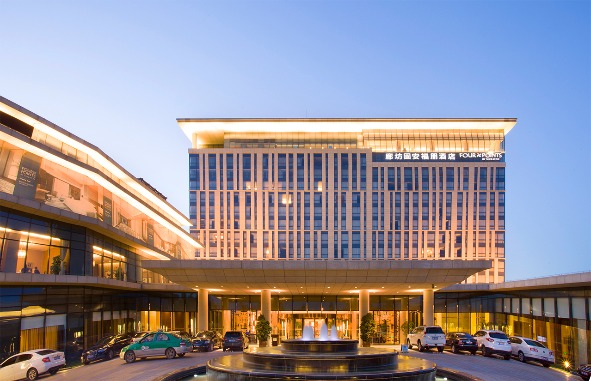

成都柏丽酒店地处现代工业基地——蛟龙工业港双流园区的核心商业地段，系四川柏丽酒店投资管理有限公司打造的精品商务酒店品牌。酒店全部客房和柏丽咖啡厅均按照高星级标准装修，豪华舒适，更有优秀的管理团队为您提供贴心优质的服务，让宾客尽享如家般的温馨。酒店拥有豪华单间、豪华标间、行政单间、商务标间、套房、特色水床等客房。客房设施包括独立中央空调系统、大屏幕液晶电视、名牌卫浴设施、名牌舒适床垫、有线和无线上网功能、市内电话等。
柏丽酒店交通便利，生活配套齐全，时代奥特莱斯、川投国际网球中心、紫荆电影城、吴铭火锅、朴真苑、菁华园度假村等近在咫尺。酒店距离双流国际机场约15公里，成都市中心约6公里，成都国际会展中心约21公里，国家级风景旅游名胜古镇黄龙溪约20公里。豪华舒适的环境、发达便利的交通，优越的地理位置，完善的商务设施，柏丽酒店将是商旅人士完美旅行的理想之选。 酒店开业时间2010年5月23日，主楼高17层，附楼4层，客房总数41间（套）。
柏丽酒店交通便利，生活配套齐全，时代奥特莱斯、川投国际网球中心、紫荆电影城、吴铭火锅、朴真苑、菁华园度假村等近在咫尺。酒店距离双流国际机场约15公里，成都市中心约6公里，成都国际会展中心约21公里，国家级风景旅游名胜古镇黄龙溪约20公里。豪华舒适的环境、发达便利的交通，优越的地理位置，完善的商务设施，柏丽酒店将是商旅人士完美旅行的理想之选。 酒店开业时间2010年5月23日，主楼高17层，附楼4层，客房总数41间（套）。
酒店星级：四星级
开业时间：2010-05-01
酒店地址：成都市武侯祠大街83号
中文名：成都柏丽酒店
装修时间：2010-05-01
归属：四川柏丽酒店投资管理有限公司